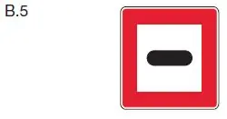

§ 6.28 Durchfahren der Schleusen
Binnenschifffahrtsstraßen-Ordnung
1. Zum Schleusenbereich gehören
a) die Schleusen und
b) die Wasserflächen oberhalb und unterhalb der Schleusen, die dem Festmachen, Einordnen und Warten von Fahrzeugen sowie zum Zusammenstellen und Auflösen von Verbänden dienen (Schleusenvorhafen).
Die zuständige Behörde kann abweichend von Satz 1 den Schleusenbereich festlegen; in diesem Fall ist seine Abgrenzung durch weiße Tafeln mit schwarzer Umrandung und der schwarzen Aufschrift „Schleusenbereich“ gekennzeichnet.
2. Bei Annäherung an den Schleusenbereich muss ein Fahrzeug seine Fahrt verlangsamen. Kann oder will es nicht sogleich in die Schleuse einfahren, hat es, wenn am Ufer das Tafelzeichen B.5 (Anlage 7) aufgestellt ist, vor diesem anzuhalten. |  |
3. Im Schleusenbereich ist das Überholen verboten. Ein Fahrzeug darf nur dann an einem anderen auf die Schleusung wartenden Fahrzeug vorbeifahren, wenn es vorgeschleust werden soll oder um sich in eine vorhandene Lücke zu legen. Im Schleusenbereich dürfen Antriebs- und Hilfsmaschinen nur in dem für den Schiffs- und Bordbetrieb erforderlichen Umfang betrieben werden. Dabei sind die Türen des Maschinenraums geschlossen zu halten. Sonstige Öffnungen des Maschinenraums müssen so weit geschlossen werden, wie es der Betrieb zulässt. Die Anlegestelle einer Fähre oder eines Fahrgastschiffes ist freizuhalten.
4. Im Schleusenbereich muss ein Fahrzeug, das mit einer Sprechfunkanlage für den Verkehrskreis Nautische Information ausgerüstet ist, den Kanal der Schleuse auf Empfang geschaltet haben.
5. Im Schleusenbereich müssen die Anker vollständig hochgenommen sein. Satz 1 gilt nicht, wenn sie außerhalb der Schleuse benutzt werden sollen.
6. Sind mehrere Schleusen vorhanden, muss ein Fahrzeug die ihm zugewiesene Schleuse ansteuern. Die Weisung hierzu kann bei Tag und bei Nacht durch die in § 6.28a beschriebenen Richtungsweiser gegeben werden. Ein Fahrzeug, dessen Abmessungen kleiner als diejenigen einer vorhandenen Bootsschleuse sind, hat diese zu benutzen, sofern die Schleusenaufsicht keine andere Weisung erteilt.
7. Vor Einfahrt in die Schleuse müssen die Schlepptrossen kurzgeholt sowie Ausrüstungsteile – ausgenommen solcher Ausrüstungsteile, die zum Abfendern benötigt werden – binnenbords genommen werden. Der Führer eines beschädigten Fahrzeugs muss die Schleusenaufsicht vor der Einfahrt auf die Beschädigung aufmerksam machen, sofern die Beschädigung den Schleusenbereich oder ein anderes Fahrzeug gefährden kann.
8. Bei der Fahrt in den Schleusenvorhäfen und bei der Einfahrt in die Schleusen muss ein Fahrzeug seine Geschwindigkeit so verringern, dass ein sicheres Abstoppen mittels Drahtseilen, Tauen oder anderen geeigneten Maßnahmen unter allen Umständen möglich ist und ein Anprall an ein Schleusentor oder an die Schutzvorrichtungen sowie an ein anderes Fahrzeug oder an einen Schwimmkörper ausgeschlossen ist. In den mit Schwimmpollern ausgerüsteten Schleusen dürfen zum Anhalten nur die Kanten- und Nischenpoller verwendet werden. Ein Schwimmpoller darf erst belegt werden, nachdem das Fahrzeug oder der Verband zum Stillstand gekommen ist. Der Schiffsführer hat dafür zu sorgen, dass das Fahrzeug durch Belegen der Poller oder Haltekreuze der Schleusenkammer mit Drahtseilen oder Tauen im Notfall auch ohne Maschinenkraft rechtzeitig anhält. Er hat ferner dafür zu sorgen, dass die Decksmannschaft, die für die sichere Schleusendurchfahrt erforderlich ist, vom Beginn der Fahrt in die Schleuse bis zur Beendigung der Ausfahrt aus der Schleuse an Deck ist. Ein Fahrzeug oder ein Schwimmkörper muss so weit in die Schleusenkammer einfahren und sich so hinlegen, dass die nachfolgenden Fahrzeuge oder Schwimmkörper bei der Einfahrt und in der Ausnutzung der Schleusenkammer nicht behindert werden. Insbesondere muss das oder der letzte vom Oberwasser her einfahrende Fahrzeug oder Schwimmkörper so weit vorfahren, dass es oder er beim Leeren der Schleusenkammer nicht auf den Drempel aufsetzen kann.
9. In den Schleusenkammern
a) hat sich ein Fahrzeug, sofern an den Schleusenwänden Grenzen markiert sind, innerhalb dieser Grenzen zu halten,
b) muss ein Fahrzeug während des Füllens und Leerens der Schleusenkammer und bis zur Freigabe der Ausfahrt festgemacht sein und die Befestigungsmittel müssen derart bedient werden, dass Stöße gegen die Schleusenwände, die Schleusentore oder die Schutzvorrichtungen sowie gegen ein anderes Fahrzeug oder einen Schwimmkörper vermieden werden,
c) sind Fender zu verwenden, die schwimmfähig sein müssen, wenn sie nicht fest mit dem Fahrzeug verbunden sind,
d) ist es verboten,
aa) ein Fahrzeug oder einen Schwimmkörper abzuwaschen oder abzukehren,
bb) von einem Fahrzeug oder einem Schwimmkörper Wasser auf eine Schleusenplattform, auf ein anderes Fahrzeug oder einen Schwimmkörper zu schütten oder ausfließen zu lassen,
cc) ohne Erlaubnis der Schleusenaufsicht Fahrgäste ein- und aussteigen zu lassen,
e) ist es verboten, nach dem Festmachen des Fahrzeugs bis zur Freigabe der Ausfahrt den Maschinenantrieb sowie die Bugstrahlanlage zu benutzen, es sei denn, dass dies aus Sicherheitsgründen kurzfristig erforderlich ist,
f) muss ein Kleinfahrzeug oder ein Verband, der ausschließlich aus Kleinfahrzeugen besteht, ausreichend Abstand zu anderen Fahrzeugen halten.
Das Verbot nach Satz 1 Buchstabe e gilt nicht, sofern
a) die Bugstrahlanlage mit niedrigen Umdrehungszahlen ohne eine Veränderung der Wirkungsrichtung des Propellers laufengelassen,
b) nicht zum Manövrieren eingesetzt wird und
c) eine Beeinträchtigung anderer Verkehrsteilnehmer oder eine Beschädigung der Schleusenanlage ausgeschlossen ist.
10. Im Schleusenbereich muss zu einem Fahrzeug oder einem Verband, das oder der die Bezeichnung nach § 3.14 Nummer 1, 2 oder 3 führt, ein seitlicher Abstand von mindestens 10,00 m eingehalten werden. Dies gilt jedoch nicht für ein Fahrzeug oder einen Verband, das oder der die gleiche Bezeichnung führt und für das in § 3.14 Nummer 7 genannte Fahrzeug.
11. Ein Fahrzeug oder ein Verband, das oder der die Bezeichnung nach § 3.14 Nummer 2 oder 3 führt, muss jeweils allein geschleust werden. Abweichend von Satz 1 kann ein Trockengüterschiff nach ADN, das Container, Großpackmittel (IBC), Großverpackungen, Gascontainer mit mehreren Elementen (MEGC), Tankcontainer und ortsbewegliche Tanks nach Unterabschnitt 7.1.1.18 des ADN befördert und die Bezeichnung nach § 3.14 Nummer 2 führt, gemeinsam
a) mit einem gleichartigen Fahrzeug,
b) mit einem Trockengüterschiff, das Container, Großpackmittel (IBC), Großverpackungen, Gascontainer mit mehreren Elementen (MEGC), Tankcontainer und ortsbewegliche Tanks nach Unterabschnitt 7.1.1.18 des ADN befördert und die Bezeichnung nach § 3.14 Nummer 1 führt oder
c) mit dem in § 3.14 Nummer 7 genannten Fahrzeug geschleust werden.
Zwischen Bug und Heck der gemeinsam geschleusten Fahrzeuge nach Satz 2 muss ein Mindestabstand von 10,00 m eingehalten werden.
12. Ein Fahrzeug oder ein Verband, das oder der das Kennzeichen nach § 2.06 trägt, darf nicht in eine Schleuse einfahren, wenn
a) es außerhalb des LNG-Systems zu Freisetzungen von Flüssigerdgas (LNG) kommt oder
b) eine Freisetzung von Flüssigerdgas (LNG) außerhalb des LNG-Systems während der Schleusendurchfahrt zu erwarten ist.
13. Ein Fahrzeug oder ein Verband, das oder der die Bezeichnung nach § 3.14 Nummer 1 führt, darf nicht zusammen mit einem Fahrgastschiff, das Fahrgäste an Bord hat, oder einem Sportfahrzeug im Sinne des § 34 Absatz 1 der Binnenschiffsuntersuchungsordnung, das Fahrgäste an Bord hat, geschleust werden.
14. Eine Schleuse, die zur Bedienung durch das Schiffspersonal nicht besonders eingerichtet ist, darf nur mit Erlaubnis der Schleusenaufsicht bedient werden.
15. Die an einer fernbedienten oder selbstbedienten Schleuse auf Schildern, Tafeln mit elektronischer Schrift oder in ähnlicher Weise bekannt gegebenen amtlichen Hinweise und Anweisungen sind bei der Benutzung und sofern eine Selbstbedienung vorgesehen ist, bei der Bedienung der Schleuse zu beachten.
16. Ein Fahrzeug oder ein Schwimmkörper, das oder der nicht zur Schleusung ansteht, darf im Schleusenbereich nur stillliegen, wenn es von der zuständigen Behörde allgemein zugelassen oder im Einzelfall von der Schleusenaufsicht erlaubt ist.
17. Der Schiffsführer eines Fahrzeugs, das auf der Strecke zur nächsten Schleuse laden oder löschen will, und der Führer eines Verbandes, der bis zur nächsten Schleuse weitere Fahrzeuge aufnehmen oder ablegen will, müssen dies der Schleusenaufsicht anzeigen.
18. Die Schleusenaufsicht kann aus Gründen der Sicherheit und Leichtigkeit des Verkehrs, zur Beschleunigung der Durchfahrt oder zur vollen Ausnutzung der Schleusen Anordnungen erteilen, die diese Vorschrift ergänzen oder von ihr abweichen. Der Schiffsführer hat diese Anordnungen im Schleusenbereich zu befolgen.